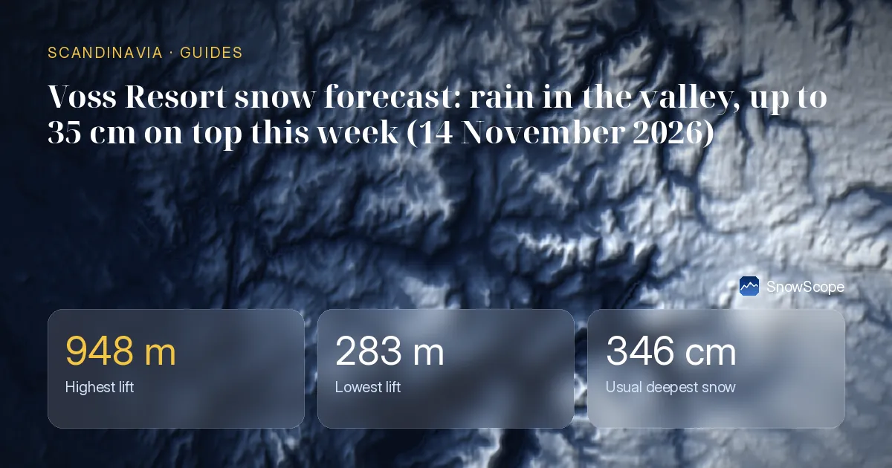

Voss Resort snow forecast: rain in the valley, up to 35 cm on top this week (14 November 2026)
Voss is a coastal mountain: the weather comes straight in from the North Sea, wet and heavy. Today that means a bare town and a white skyline. Norway's national snow map estimates about 20 cm on the ground at 1348 m, about 9 cm at 1096 m and only about 3 cm at 287 m, close to the bottom of the gondola. These are estimates; the nearest station that measures snow, Mjølfjell at 695 m and 30 km east, had 10 cm on 13 November. The big story is the coming week.
See the live snow forecast for Voss Resort Fjellheisar in the SnowScope appSnow depth, powder alerts and the 3D map, free.

A wet week, white above 600 m
We expect about 35 cm at the top of Voss Resort (948 m) over the next seven days, 28 cm at 615 m and about 5 cm at the base (283 m). The first two days alone bring about 22 cm to the top.
The other forecasts we compare with spread wide at the top, from 14 to 98 cm. They agree on one thing: there is no rain at the top, but at the base about three quarters of the water falls as rain, and the snow line sits around 550 to 620 m. Below that line, expect slush and rain; above it, a real build-up.

Normal at Voss: a lot, but late at the bottom
Our 46 past winters show how much snow this coast can deliver. The usual depth at the top is 58 cm on 14 November and 121 cm on 15 December. A middle winter peaks at about 346 cm at the top, and the biggest in our record reached 545 cm.
The bottom is a different story. At 283 m the usual depth on 14 November is 20 cm, but in nearly one winter in four there is none at all on that date, and about one in eight still has nothing on 21 November. Rain-on-snow is part of life here.
Less snow than before
The long record is not flat. At the top, the middle peak depth was 386 cm over the first 15 winters and 306 cm over the last 15; snow days fell from 289 to 252. Last winter peaked at 247 cm at the top. It is still a big-snow place, but the low slopes have become less reliable.
Is Voss Resort open?
Not yet. Voss Resort's opening-hours page lists an opening weekend from 4 to 6 December and daily skiing from 11 December to 11 April. It adds that the opening depends on snow and weather.
Tips for skiers
- Heavy, wet snow on a thin base is a classic setup for slab avalanches on steep slopes above the lifts: check the avalanche bulletin before any off-piste.
- Expect rain and slush in Voss town and on the E16; snow chains or good winter tyres for the mountain roads.
- If the top gets the higher end of the forecast, wait a day for the snow to settle before skiing steep terrain.
More maps (external sites)
References and credits
- seNorge, Norway's national snow map (NVE and MET Norway), open data under the NLOD licence www.senorge.no/
- Voss Resort, official site: opening dates and lift status, read 2026-11-13 www.vossresort.no/ditt-besok/opningstider/
- Varsom, avalanche warnings for Norway www.varsom.no/
- MET Norway, station observations (CC BY 4.0), daily reports as published by Ogimet www.ogimet.com/
About these numbers
Measured snow: morning readings of 13 November 2026 at the official weather stations of Sweden (SMHI open data), Finland (FMI open data, CC BY 4.0) and Norway (MET Norway station reports, CC BY 4.0, as published by Ogimet). Norway's national snow map seNorge (NVE and MET Norway, NLOD) gives the estimates on a 1 km grid for the slopes. Our numbers: SnowScope's forecast for the next seven days at three heights of the ski area, compared with independent forecasts (ECMWF, ICON, GFS, GEM) for 14 to 20 November; snow history of 46 past winters (1980-81 to 2025-26), a model of the past corrected for height. Opening dates: the resorts' own pages, read on 13 November 2026. Run length and lift count: OpenSkiMap mapping.
Official avalanche bulletins: Varsom (NVE)
Cite this report
For research, teaching or the press: the numbers and charts are free to reuse under CC BY 4.0 with this citation.
SnowScope (2026), Voss Resort snow forecast: rain in the valley, up to 35 cm on top this week (14 November 2026), https://snowscope.app/blog/en/2026/11/voss-resort-snow-forecast-14-november-2026.html, accessed 2026-11-14
SnowScope (Atlas Labs). (2026, November 14). Voss Resort snow forecast: rain in the valley, up to 35 cm on top this week (14 November 2026). SnowScope snow reports. https://snowscope.app/blog/en/2026/11/voss-resort-snow-forecast-14-november-2026.html
BibTeX
@misc{snowscope2026vossresortsnowforecast14,
author = {{SnowScope (Atlas Labs)}},
title = {Voss Resort snow forecast: rain in the valley, up to 35 cm on top this week (14 November 2026)},
year = {2026},
month = nov,
howpublished = {\url{https://snowscope.app/blog/en/2026/11/voss-resort-snow-forecast-14-november-2026.html}},
note = {Published 2026-11-14 14:49 UTC; accessed 2026-11-14}
}· CC BY 4.0 · Methods, data and tools →
Voss Resort Fjellheisar: snow and temperature by height, this winter vs last (tools) →
Follow Voss Resort Fjellheisar
Free: a message when fresh snow is coming, and the forecast every morning.
More snow reports

Is Alpe d'Huez worth it for December 2026? We check the snow odds, the starting price of 58.00 EUR, and compare it with Les 2 Alpes.

Riksgränsen dominates Scandinavia with 173 cm of snow depth measured on 16 November, holding far more mountain water than any rival resort in the region.

Les Deux Alpes: 38–42 cm of fresh snow in 72 hours (Alps, 14 November). La Grave got 53 cm of new snow in the last 72 hours, 7 cm of it in the last …